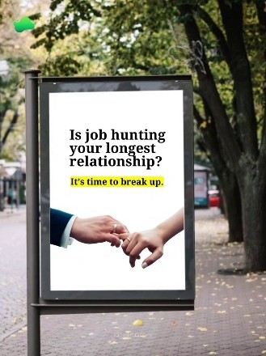
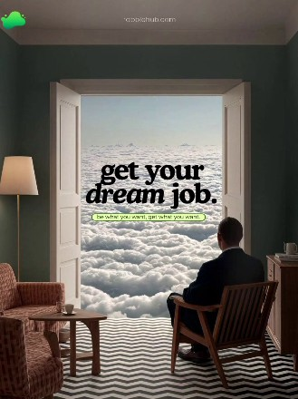
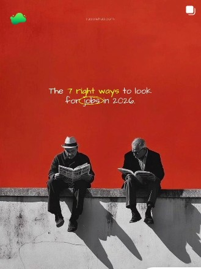
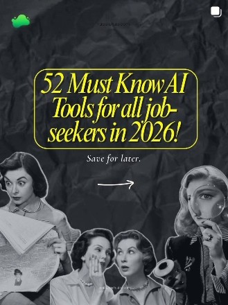
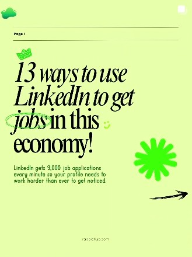
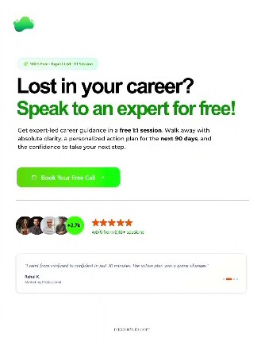
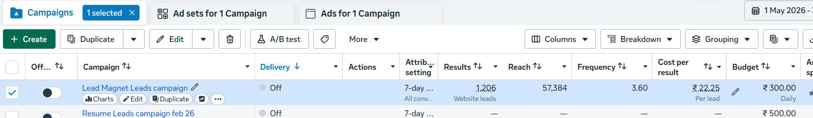

RabbleHub was a career-support platform built to make job hunting more guided and effective. We helped candidates with profile optimisation, targeted company discovery, referrals, outreach and interview support, using a mix of human guidance and automation.
At a glance
The idea
The job search was crowded, but affordable support that combined guidance, referrals and hands-on help was still limited.
We wanted to see if we could build something that went beyond simply telling people to apply to more jobs. The goal was to genuinely make the process easier and more effective.



From the first offer to what actually worked
We started with a simple idea: help people increase their interview opportunities.
But working with actual candidates changed our thinking. We found that our strongest value was not just getting more applications out. It was helping candidates position themselves better, identify the right companies and get closer to the right people through referrals.
This shift became an important part of how we shaped the business.
What I owned
I was one of four people working on RabbleHub, and my role covered much more than marketing.
Building the system
When we started, the process was largely manual. The team would research each candidate, identify target companies, find relevant people and work through referral outreach individually.
As we saw the same work being repeated, I started looking at what could be systemised.
- 1Candidate Profile
- 2Relevant Companies & Roles
- 3Relevant People
- 4Personalised Outreach
- 5Referral Opportunities
I built AI-assisted workflows to help with company targeting, job discovery and personalised outreach, turning a largely manual process into something the team could run more efficiently.
Figuring out the marketing funnel
Our initial approach was straightforward. Run ads, generate leads and introduce people to the service.
After testing different approaches, we found that giving people something useful before introducing the paid service worked better.



This change increased conversion rates by up to 30%.
Our paid campaigns also generated leads at around ₹20–25 CPL.

Building around customer feedback
Customer conversations became one of our biggest sources of product insight.
The business kept evolving through a simple cycle:
What came out of it
- Profile positioned
- Multiple calls
- Role in her target area
The last one was particularly meaningful.
RabbleHub was designed as a 3-month service, so seeing one of our first candidates start receiving multiple calls and eventually secure a job within the first month was something we hadn't expected so early.
It was the first real sign that what we were building could have an impact beyond the numbers.
What I took from it
RabbleHub was the first time I had to think about a business from almost every angle.
I wasn't just asking, “How do we market this?” I was also asking:
- What should we build?
- Who actually needs it?
- How should we position it?
- What are customers telling us?
- What can we automate?
- What isn't working, and what should change?
It pushed me from executing marketing to thinking more like a builder and strategist.
More than anything, RabbleHub showed me that I enjoy being involved in the entire journey from an idea to something real that people will actually use and pay for.